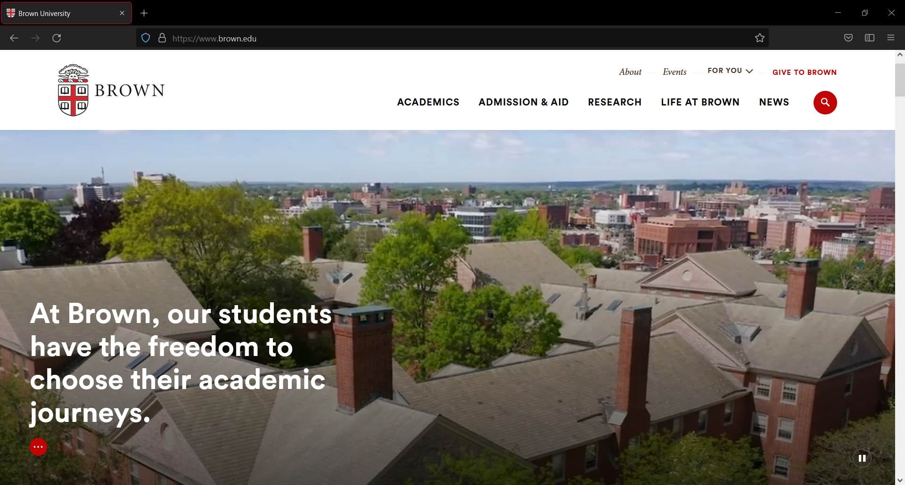

Home > Gallery > Brown University

Brown University
I was on the Web and Digital Team in the Office of Communications at Brown University for a year and a half. I helped the team maintain the Brown domain, as well as migrate old content to current standards. Brown.edu runs on Drupal, ranging from versions 6 through 8. (The Bookstore theme I designed is based on Drupal 7.)
My initial project at Brown was to archive the oldest content on the domain. I got to sift through pages dating back to 1998. I documented the content by year, relevance, and contact info. It was fascinating to see web content nearly as old as I am. This documentation task was soon passed onto a student employee as I began to take on site building responsibilities.
I spent a lot of time building out websites for different departments and divisions. I also commonly performed site reviews for my peers and participated in testing at the end of sprints.
I did not personally have much influence on the design of the site, since I was an assistant and a temporary part of the team, but I assisted in the building of several major sites on the domain (including Engineering, IBES, and Admissions).
Towards the end of my time at Brown, I wanted to dive deeper into Drupal in case I ever get to work with it again. I started to seek out more intensive training on Drupal, and put some studying towards a Drupal Front End Certificate. This sent me a thorough bootcamp of JavaScript and gave me a solid look into Twig and React, as well as initial startup, troubleshooting, and security. These were areas left to other members of my team, but I wouldn't hesitate to take a crack at them now that I've learned more.